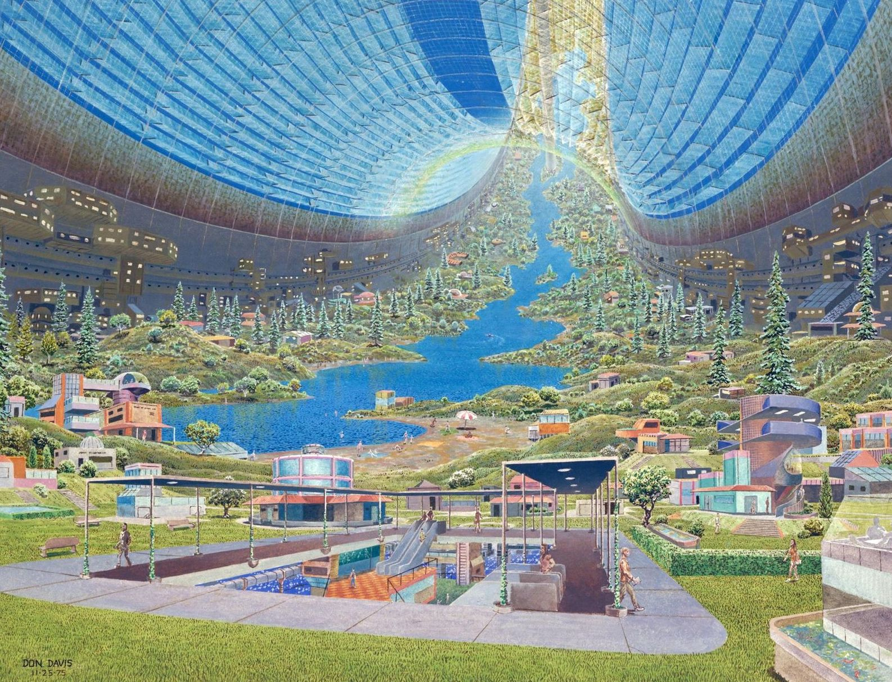
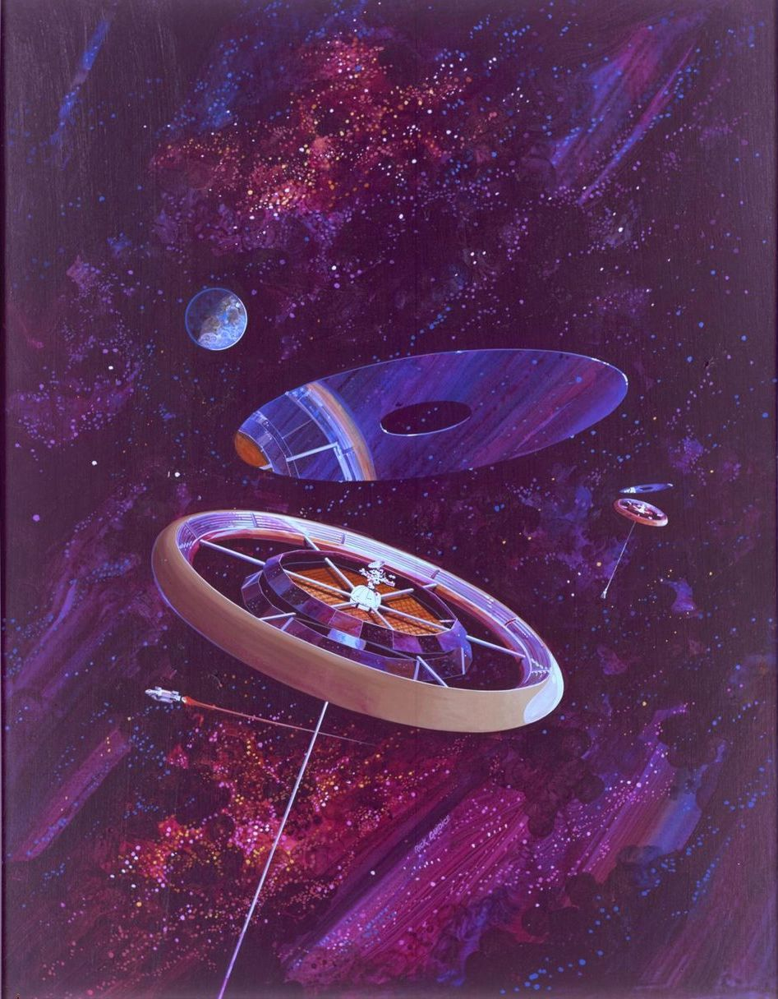
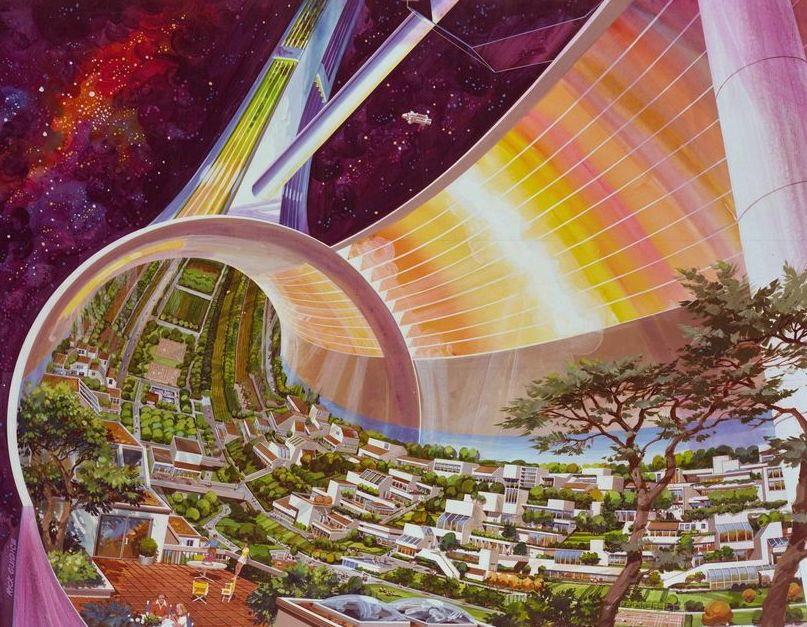
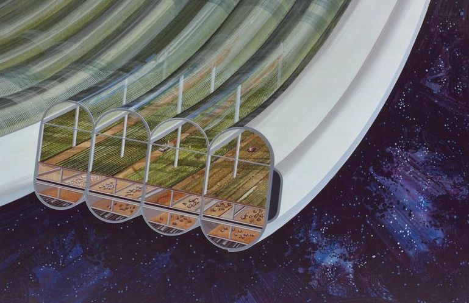
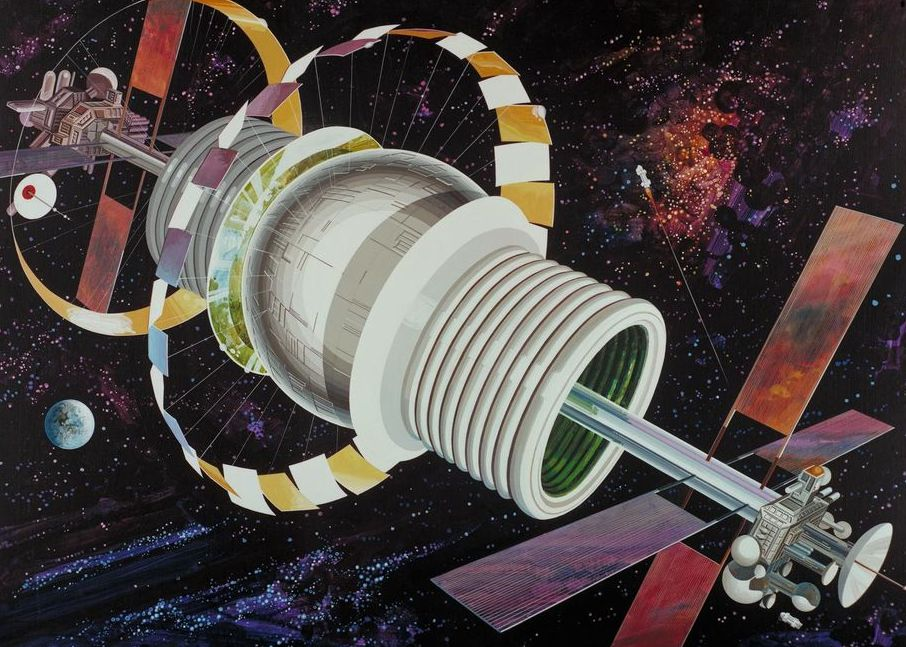

- Product
- Daily point, meteorology
- Variables
- PRECTOTCORR, T2M_MAX
- Grid cell
- 41.6, −0.9 · 0.5° × 0.625°
- Retrieved
- 14 Nov 2026, 10:12 UTC
- Checksum
- 3f9a1c…c21e
- A 12-year reference is short. Anomalies describe the weather; they don't show what damaged the crop.
Investigate a failed harvest with NASA Earth data
Enter where and when it happened. You get the weather record for that place against earlier years, the explanations that fit, and what each one still needs before anyone can call it a cause.

From a bad harvest to a better plan
Four steps. Each one keeps track of where every piece of evidence came from.

1Describe the incident
Where, when, what you grew and what you saw. Your words stay marked as yours.

2Read the NASA record
Daily rain and temperature for that place since 1981, compared with earlier years.

3Weigh the explanations
Each possible cause with the evidence for it, against it, and what would settle it.

4Compare rotations
Your current rotation and at least two alternatives, then a report you can share.
What a case looks like
An example with invented values, so you can see how the evidence is laid out.
Illustrative case. Every value below is invented for this page. The app only shows data returned by NASA POWER and OpenAlex.
- Case
- ABB-0007
- Location
- Zaragoza, ES · rounded to 0.1°
- Status
- Investigating
- Data scale
- 0.5° × 0.625° grid cell
- Period
- 2022 against 2010–2021
- Reviewer
- Not assigned
Wheat loss, north plot
Yellowing from the field edges in May; yield about half of the usual, reported by the farmer.
Rain in 2022, against 2010–2021
Observed · NASA POWERRegional gridded weather for the cell around the field, not a reading taken in the field.
Explanations that fit so far
None of these is a conclusion. Open one to see what supports it, what argues against it and what would settle it.
Supports it
- Rain 142 mm below average, April–June
- Reviewed study on Triticum durum under spring drought
Argues against
- Low ground held water in March
Would settle it
- Soil moisture reading, May
Supports it
- Damage started on the lower ground
Argues against
- March rain 32 mm below average
Would settle it
- Root sample from the affected strip
“The north plot sits lower and held water in March. That's where it started.”
Farmer reportedCase owner12 Nov 2026
“Waterlogging doesn't fit a drought-only story. A May soil moisture reading would separate the two.”
Agronomist, community reviewer13 Nov 2026objection
How each piece of evidence is marked
The same symbols appear on every screen and in the report, so a satellite reading is never mistaken for a field measurement.
- Observed
Retrieved from NASA or another measured source.
- Farmer reported
Told by the person who works the field.
- Reviewed literature
A study a person has checked, with its DOI.
- Hypothesis
A possible explanation, with evidence for and against.
- Model scenario
Computed from stated assumptions; not an outcome.
- Illustrative
An example for learning. Never real data.
- Missing data
Something the investigation still needs.
Open data from orbit, read with the people on the ground
Every number on screen links back to the request that produced it. Studies only count as evidence after a person has checked them.

- NASA POWERDaily weather since 1981, about 50 km gridConnected
- OpenAlexSearch for scientific studies and DOIsConnected
- NASA GPMSatellite rainfall, finer in timePlanned
- NASA HLSLandsat and Sentinel-2 surface reflectance, 30 mPlanned